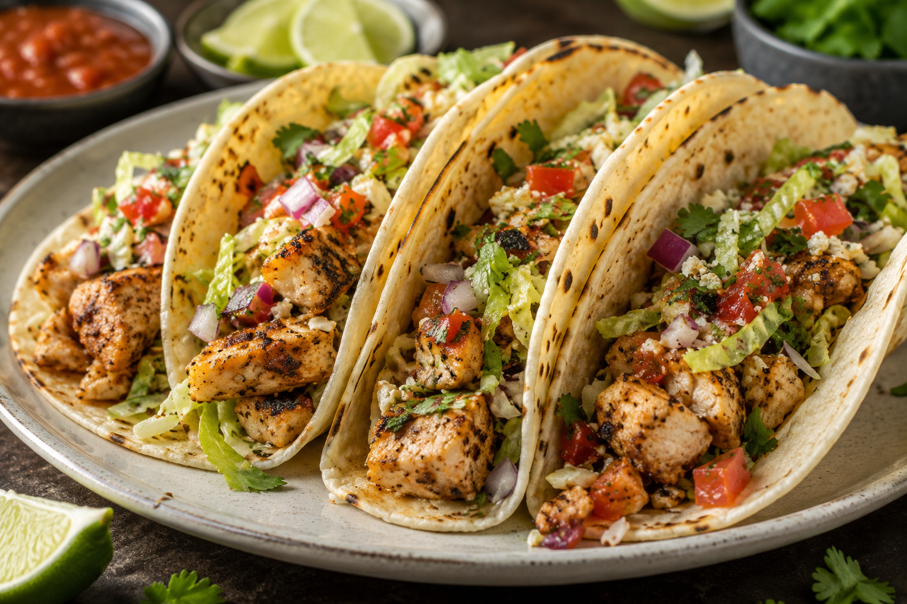

Chicken Tacos

About The Recipe
Chicken tacos are a classic Mexican-inspired dish featuring seasoned, juicy chicken served in warm tortillas and topped with fresh ingredients. The combination of tender chicken, crisp vegetables, creamy toppings, and bright citrus creates a balance of savory, smoky, tangy, and fresh flavors. They're quick to make, customizable, and perfect for a weeknight dinner or gathering.
Ingredients
- 1 lb chicken breast, diced
- 1 packet taco seasoning
- 2 tbsp water
- 8 small flour or corn tortillas
- 1 cup shredded lettuce
- 1 cup shredded cheese (cheddar or Mexican blend)
- 1 tomato, diced
- Sour cream (optional)
Steps
- Heat a skillet over medium heat.
- Add the diced chicken and cook for 6 to 8 minutes until no longer pink.
- Sprinkle the taco seasoning over the chicken and add 2 tablespoons of water.
- Stir and cook for 2 more minutes.
- Warm the tortillas in the microwave for 20 seconds.
- Fill each tortilla with chicken.
- Top with lettuce, cheese, tomato, and sour cream if desired.